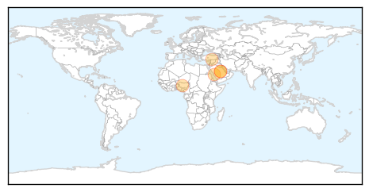
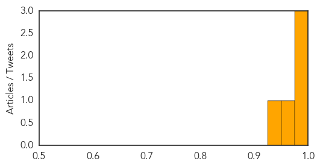
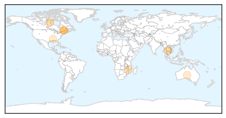

MERS
30-Day Web Trend
0 alerts, 12 warnings

30-Day Twitter Trend
3 alerts, 0 warnings

Article Locations
Article Confidences
Top Articles:
Top Tweets:
-
No tweets found for Sep 15, 2015
Influenza
30-Day Web Trend
3 alerts, 0 warnings

30-Day Twitter Trend
4 alerts, 0 warnings

Article Locations
Article Confidences

Top Articles:
- 1.000
- The cost-effective shot
- 0.973
- BCCDC puts call out for more doctors and nurses to help monitor for flu
- 0.970
- BC Disease Control Calls for Doctors and Nurses to Help as Flu Season Approaches
- 0.962
- Flu-monitoring program seeks B.C. health practitioners to evaluate illnesses
- 0.808
- WVPAC 2015: Spent Hen Industry Regulation Needed to Prevent Newcastle Disease
- 0.664
- KFVS12 News & Weather Cape Girardeau, Carbondale, Poplar Bluff
- 0.660
- Another 30,000 Year Old Giant Virus Found in Siberian Permafrost
- 0.632
- Alberta Health short of last year’s flu vaccine targets
Top Tweets:
-
No tweets found for Sep 15, 2015